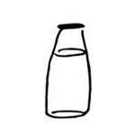
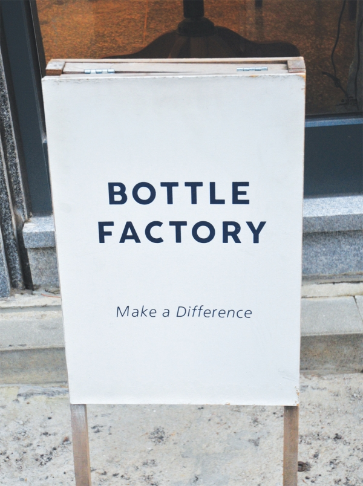
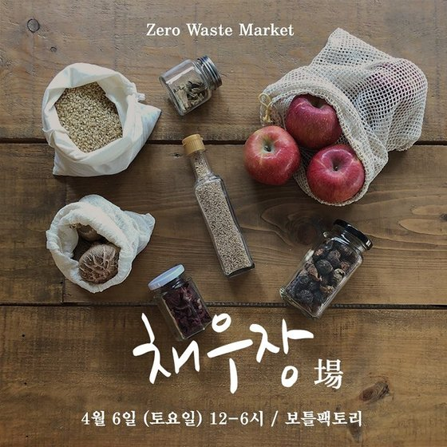

보틀팩토리
주소: 서울특별시 서대문구 연희동 708번지 1층
일회용품을 사용하지 않는 카페 & 케이터링
 화-일 11-22
관련정보
일회용품 없는 카페는 가능하다 - 한겨레21 이승준기자(gamja@hani.co.kr)
“친환경 카페에서 컵공유 플랫폼으로 진화”…보틀팩토리, 공유컵 ‘리턴미’ 개발
새로운 쓰레기 정책이 필요하다! 시민인터뷰 ③ 일회용 없는 카페 ‘보틀팩토리’ 대표 정다운
일회용품 없는 카페는 가능하다 - 한겨레21 이승준기자(gamja@hani.co.kr)
“친환경 카페에서 컵공유 플랫폼으로 진화”…보틀팩토리, 공유컵 ‘리턴미’ 개발
새로운 쓰레기 정책이 필요하다! 시민인터뷰 ③ 일회용 없는 카페 ‘보틀팩토리’ 대표 정다운